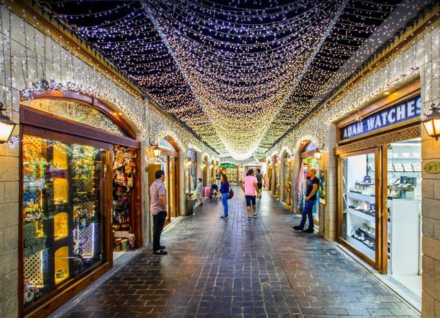
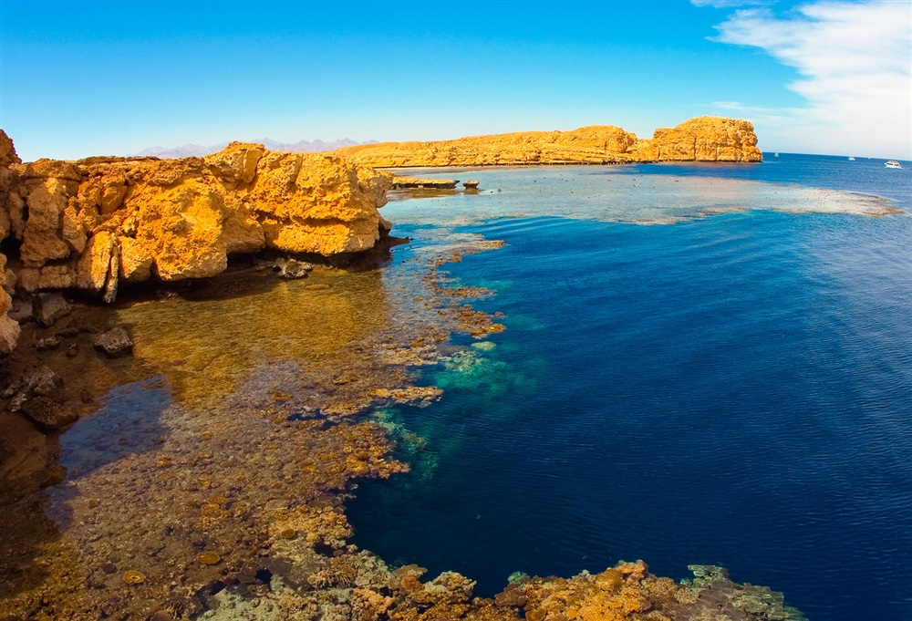
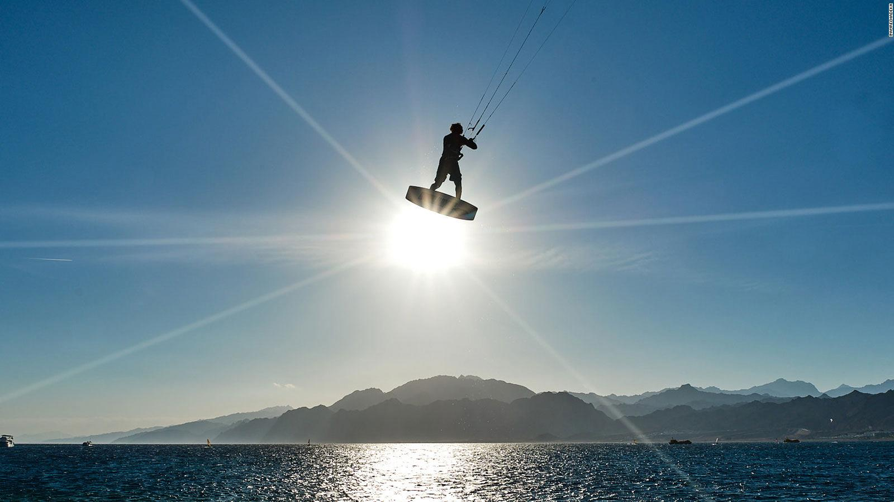
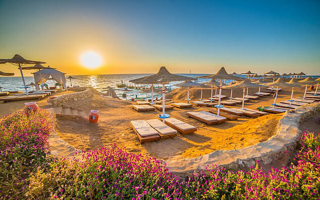
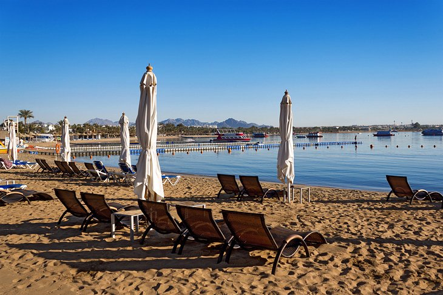

Take a break from the flashier side of the resort city and delve into its more established commercial core at Old Market.
The set of stalls, stores, and places to eat contrasts with the city's better-known resort lifestyle.
And while the market largely gears itself toward international tourism,
scenes of authentic daily life remain prevalent in the areas selling fresh produce and spices.
Pick up a souvenir of your trip to Egypt, choosing from the large selection of traditional textiles, trinkets, and ornaments.
Sample local and international cuisine at the onsite eateries, including popular Egyptian barbecue joints serving kebabs and kofta.
Soho Square

Entertainment in a variety of forms, SOHO Square houses a number of classy stores selling jewelry, clothes, and electronics,
with a real focus on catering to the tastes of visitors from across the world.
The same rings true of the dining and drinking options on site,
with different global cuisines to be tried at a range of fine, casual, and alfresco eating areas.
Entertainment options include a number of play areas, a stage for performances, and sports facilities, so you don't have to be mad on shopping to visit.
King Tut Museum In Sharm El Sheikh
The King Tut Museum is a popular tourist attraction in the city.
Located in the Genena City Mall in Naama Bay,
it showcases the life of the pharaoh of ancient Egypt in the 18th dynasty, Tutankhamun.
The museum houses hundreds of replicas of his jewelry, gold mask, sculptures, pictures,
and relics of the tomb that are recreated from originals exhibited at the Museum of Egyptian Antiquities in Cairo.
Tiran Island

The island is completely devoid of any form of civilization and the surrounding seabed is characterized by the presence of four beautiful coral reefs:
the Jackson reef, the Woodhouse reef, another reef called Thomas, and finally the one known as Gordon.
the richness and variety of the seabed make it an ideal destination, both for diving enthusiasts and for those who simply enjoy snorkeling.
Dahab Beach

Dahab beaches named best in middle east by national geographic There's definitely no shortage of gorgeous beaches in the Middle East,
from Jordan and Lebanon all the way to Turkey.
But Egypt still seems to have a certain edge when it comes to stunning scenery and sandy beaches,
as evidenced by several polls across the world - like the one recently held by TripAdvisor in which a beach
in Sharm el Sheikh was selected as the best in the region. Not too far from Sharm el Sheikh is Dahab.
Nabq Bay

Nabq Bay is pristine and peaceful, thanks in large part to its status as a protected area.
Here, mingle with dozens of species of flora and fauna amid the mangroves or dive into the sparkling water to explore the nearby coral reef.
"Wild" (unguided) snorkeling is popular here—happy swimmers bob along as peacefully as the undisturbed wildlife.
More adventurous travelers can venture into the desert on one of the many popular quad tours.
Ras Mohamed Nature Reserve
Ras Mohammed National Reserve is a conservation area, the pride of Egypt,
the countrys first national park, opened in 1989. It was created to preserve the species representatives of flora and fauna,
as well as their growth in natural conditions.
the total area of the park is 480 sq. kilometers, of which more than two-thirds is the water surface. The territory of the park includes two islands Tiran and Sanafir.
Soak Up the Sun at Naama Bay

Naama Bay is the main area of touristic development in Sharm El Sheik ,
with an attractive pedestrian path separating them from the beach.
Behind them passes the busy main dual carriage way with its own row of less well-situated hotels and various commercial outlets.
For those looking for a holiday full of sloth-like sunbathing, Naama Bay is one of Egypt's top choices. The entire beach area has excellent facilities ,
including ample sun-shades and loungers, and the beachside cafés mean you don't even have to move from your patch of sandy bliss all day.